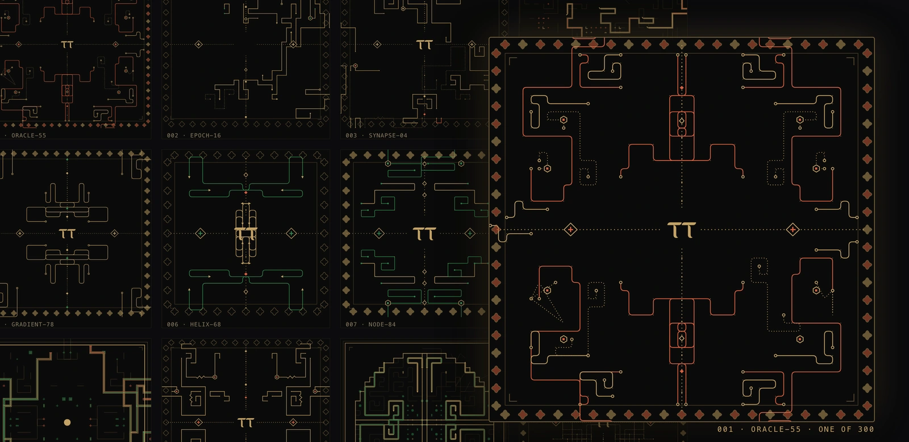
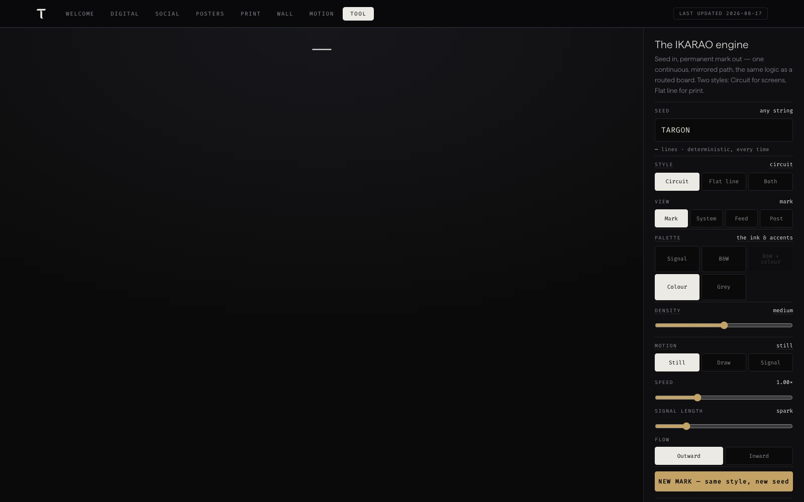
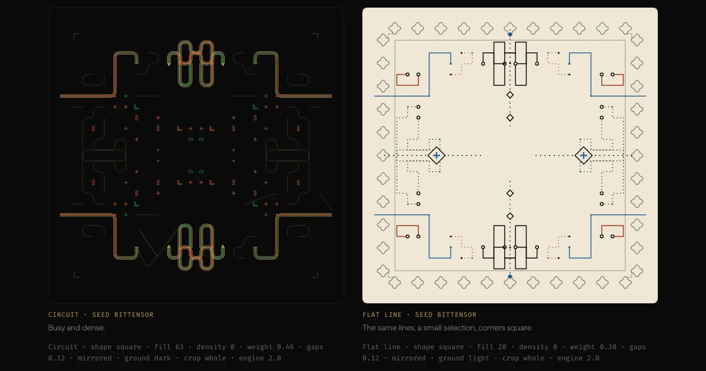
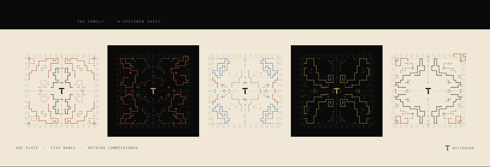
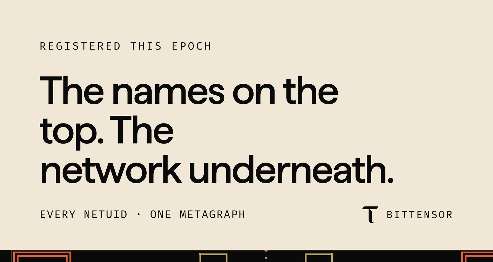
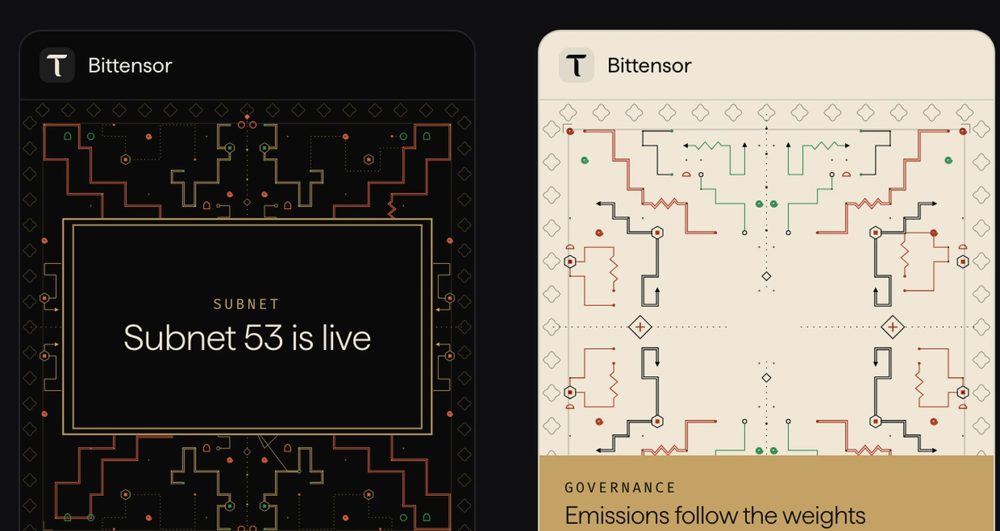

IKARAO
An identity system built as a drawing engine, not a logo — ruled like a typeface family, researched off eighty-six reference textiles.

04 / IKARAO
Bittensor is a decentralized AI network with thousands of named parts — subnets, validators — and no shared way for any of them to look like they belong together. We didn’t design them a logo. We researched a drawing discipline — the same order of rigor as cutting a type family or a colour system — and built an engine that enforces it on every name the network ever produces. Same name, same mark, forever. Different name, different mark — unmistakably from the same family.
One mechanism underneath all three: the resemblance has to be a property of how a mark is made, not a rule someone has to remember to follow.
1For the network
A thousand named parts need to look related without a designer touching each one. The engine gives every name a mark the moment it exists — nobody has to ask for it.
2For the team shipping it
Announcements, subnet cards, a daily social feed — all of it needs to move faster than a designer can. One template, filled in by the same engine, every time.

One drawing rule
Every mark is built the same way: a name becomes a number, the number steers a pen across a grid, and the pen draws continuous lines that never cross themselves. The name is the only input.
The drawing rule itself is learned from kené, the line-work tradition of the Shipibo-Konibo people of the Peruvian Amazon: continuous paths, bordered bands, patterns that radiate from a centre. We credit that lineage by name on the work itself, and claim none of the tradition’s meaning as our own. What we added is the machine.


Repeatable, byte for byte
The same name always produces the exact same mark. A subnet’s mark isn’t stored anywhere — it doesn’t need to be. Anyone can regenerate it and get the identical result.
Which is why the whole system — posters, social templates, the site itself — is generated rather than laid out by hand, and never drifts from what the engine draws.



Rules pulled from the cloth, not a moodboard
The drawing rule didn’t start as an aesthetic. We read eighty-six reference textiles in the kené tradition against six formal questions — how weight is built, how a field is filled, where colour is allowed to land, how symmetry actually behaves, how a pattern meets its own edge — and turned what we found into rules the engine enforces on every mark it draws.
Most of it overturned our first instincts. A line doesn’t get heavier by getting thicker — the cloths build weight in three or four fixed steps, each doubling the line rather than fattening it. Colour covers 1–5% of a mark and only lands at a junction, a line end or a knot. And a full gold ground tested against a gold band on the same poster flipped the verdict: the band read as considered, the ground as loud. Same colour — area was the only variable.
None of it is decoration layered on afterward. It’s checked: the picks that made the cut came back 100% kené-true against these rules; the drafts we killed were only a third as consistent. That gap is what art direction meant on this job — not a look we chose, but a rule set strict enough to fail work that hadn’t earned it.
+Kept
- One rule, applied to every name, forever
- Every caption states a checked fact, not a guess
- The client’s own palette — the black, gold and red already live on their feed
−Cut
- A logo, guarded by a rulebook nobody enforces
- Layouts borrowed from the hundred systems we studied
- Every exploratory direction that didn’t make the cut
The engagement produced hundreds of exploratory directions. None of it ships, and none of it appears here either — showing the roads not taken makes the finished one look arbitrary instead of inevitable.
Scope. IKARAO is this studio’s name for the engagement — it appears on nothing Bittensor ships; their own mark is τ. What’s shown here is the finished system: the engine, the concept posters, the social kit. The process, the backlog and the roads not taken stay off this page, same as they stayed off the client’s.